הקרב בין דוד לגוליית הינו נקודת הקצה אשר עברה מתחיל במאבק המתמשך בין ממלכת ישראל לבין הפלשתים, אשר היו יריבים חזקים ושאפתניים באזור. הפלשתים היו עם לוחם שהתיישב בחוף הדרומי של ארץ ישראל, והם שאפו להרחיב את שליטתם ולהכניע את ממלכת ישראל
בתקופה זו, המלך שאול הנהיג את ישראל, אך עמד בפניו אתגר קשה - הפלשתים התקדמו לעבר שטחי ישראל והתמקמו בעמק האלה, מקום אסטרטגי שממנו ניתן היה לתקוף את ישראל. הצבא הפלשתי כלל לוחמים מיומנים עם כלי נשק מתקדמים, ואותם הוביל גוליית - ענק מפחיד בעל כוח פיזי אדיר ושריון כבד
גוליית נהג מידי יום לצאת אל שדה הקרב ולקרוא ללוחמי ישראל להתמודד מולו בקרב יחיד, תוך השפלתם והטלת פחד עליהם. אף אחד מחיילי ישראל לא העז להילחם בו, בשל גודלו ועוצמתו שנראו בלתי ניתנים להתמודדות. המצב היה נואש, והאימה שגוליית הטיל על צבא ישראל החלה לערער את ביטחונם
עמק האלה, תל עזקה
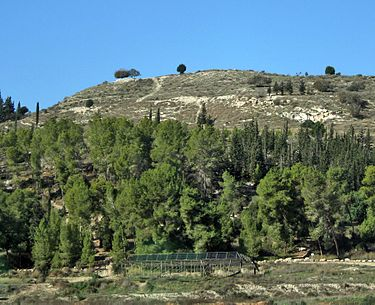
הקרב בין דוד לגוליית התרחש בתקופת מלכותו של שאול, מלך ישראל, בסביבות המאה ה-11 לפני הספירה. הוא נערך בעמק האלה. אין תאריך מדויק לקרב, אך הוא מתואר בספר שמואל א', פרק י"ז, כחלק מהמאבק המתמשך בין ישראל לפלשתים
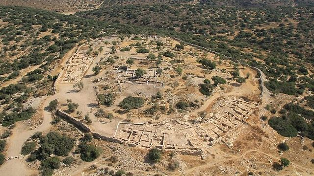
דוד היה נער צעיר מבית לחם, בנו של ישי. הוא היה רועה צאן, וחי חיים פשוטים אך מלאי אמונה. בעוד שאחיו הגדולים שירתו בצבא תחת פיקודו של שאול, דוד נשאר בבית וסייע במשק המשפחתי. דוד מתואר כנער יפה תואר עם עיניים בהירות וגוון עור אדמוני, נאמר עליו: "וְהוּא אַדְמוֹנִי עִם-יְפֵה עֵינַיִם וְטוֹב רֹאִי" (שמואל א' ט"ז, י"ב). נראה שהיה בעל מראה מרשים, אך לאו דווקא עוצמתי מבחינה פיזית, לפחות ביחס ללוחמים מנוסים של התקופה
דוד התגלה כנער מוכשר ונבון, בעל אומץ ויכולות יוצאות דופן, כשרוני בנגינה והיה לו חיבור עמוק ואמונה בה'. לפי הכתוב, שמואל הנביא משח אותו בסתר למלך העתידי של ישראל, כיוון שה' בחר בו להחליף את שאול, שמלכותו החלה להתערער
עוד לפני הקרב, דוד הפגין אומץ והתמודדות עם סכנות במהלך שמירת הצאן, כשהצליח להרוג אריה ודוב שתקפו את העדר. יכולותיו כמנהיג נבחנו כבר בשלבים מוקדמים של חייו, כאשר התבלט לא רק בכוחו הפיזי אלא גם בביטחונו ובאמונתו העמוקה
הקרב עם גוליית היה נקודת המפנה שהפכה את דוד מדמות אנונימית לנער מוכר ונערץ בכל ישראל
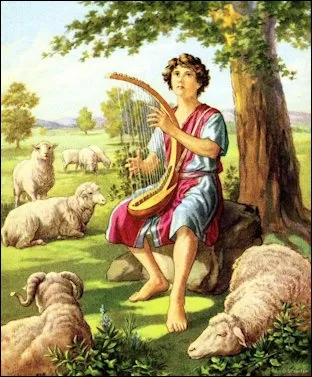
גוליית מתואר כלוחם פלשתי אדיר ששירת בצבא הפלשתים במאבקם נגד ישראל. על פי הכתוב בספר שמואל א', גוליית הגיע מהעיר גת והיה בעל גובה יוצא דופן - "שש אמות וזרת", כלומר כשלושה מטרים. גודלו המפחיד הקנה לו נוכחות מרתיעה על שדה הקרב. גוליית היה חמוש היטב בשריון קשקשים כבד הכולל קסדת נחושת ומגני ברזל על רגליו. הוא נשא עימו כידון ענק שראשו מנחושת, חרב אימתנית, ומגן שנשא עבורו אחד מחייליו. ההופעה שלו הייתה מסמלת כוח בלתי ניתן לערעור, ולכן כאשר יצא לקרוא ללוחם ישראלי לקרב יחיד, אף אחד מצבא ישראל לא העז להתייצב מולו - עד שהגיע דוד. מעבר למראה הפיזי המרשים, גוליית מתואר כאדם מלא בביטחון עצמי ולעיתים יהיר. הוא לעג לצבא ישראל והטיל פחד בלוחמיו, כשהוא מאתגר אותם לקרב שבו "המנצח לוקח הכול". הסיפור שלו מסמל את האיום הגדול ביותר על ישראל בתקופה זו, אך גם את ניצחון הרוח והאמונה על כוח פיזי טהור
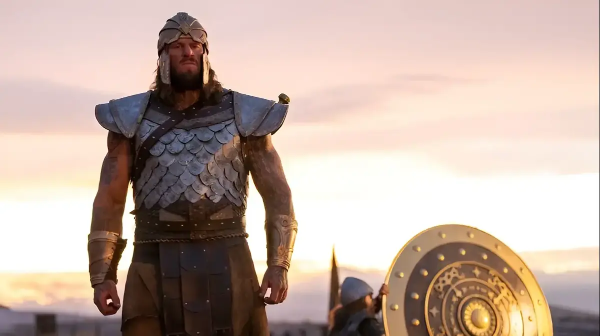
בסיפור יש מספר
דמויות משנה חשובות,
שכל אחת מהן ממלאת תפקיד משמעותי בהתפתחות העלילה
שאול המלך - מלך ישראל באותה תקופה. הוא היה מנהיג חזק אך החל לאבד את אמון העם ואת ברכת האל. שאול חושש להתמודד עם גוליית בעצמו, ולכן מאפשר לדוד לקחת את היוזמה. בסופו של דבר, ניצחונו של דוד מדגיש את חולשתו של שאול כמנהיג
ישי: אביו של דוד - הוא שולח את דוד למחנה הקרב כדי להביא מזון לאחיו. תפקידו בסיפור הוא בעיקר רקע, אך הוא מסמל את המקום הצנוע ממנו מגיע דוד
אחיו של דוד (במיוחד אליאב, האח הבכור) - שמזלזלים בדוד כאשר הוא מציע להילחם בגוליית. יחס זה מציג את דוד כמי שמצליח כנגד כל הסיכויים, גם כאשר משפחתו לא מאמינה בו
שמואל הנביא - אף על פי שאינו מופיע ישירות בסיפור הקרב עצמו, הוא דמות משמעותית בהקשר הרחב. הוא זה שמושח את דוד למלך בסתר ומבשר על נפילת בית שאול, מה שהופך את ניצחונו של דוד לקרב ראשון בדרך להפיכתו לשליט ישראל
הדמויות הללו מעניקות לסיפור
עומק נוסף
ומדגישות את
המסר המרכזי:
ניצחון האמונה, האומץ והצניעות על כוח פיזי ושלטון כושל
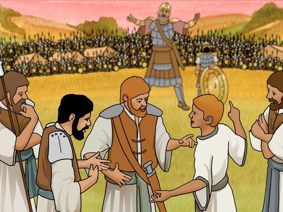
דוד מתנדב לקרב - כשדוד מגיע למחנה להביא מזון לאחיו, הוא שומע את גוליית מעליב את ישראל ונדהם שאיש לא מעז להתמודד מולו. למרות גילו הצעיר, הוא מביע נכונות להילחם בענק הפלשתי: "וַיֹּאמֶר דָּוִד אֶל-הָאֲנָשִׁים הָעֹמְדִים עִמּוֹ לֵאמֹר מַה-יֵּעָשֶׂה לָאִישׁ אֲשֶׁר יַכֶּה אֶת-הַפְּלִשְׁתִּי הַלָּז וְהֵסִיר חֶרְפָּה מֵעַל יִשְׂרָאֵל..." (שמואל א', י"ז, כ"ו). דבריו משקפים את עמדתו האמיצה - הוא אינו רואה בגוליית רק איום פיזי, אלא חרפה לישראל שיש להסיר
גוליית לועג לדוד - דוד יוצא לקרב חמוש רק בקלע ובאבנים, ללא חרב או שריון. גוליית, שרואה אותו, לועג לו בבוז: "הֲכֶלֶב אָנֹכִי כִּי-אַתָּה בָא-אֵלַי בַּמַּקְלוֹת" (שמואל א', י"ז, מ"ג) גוליית מופתע מכך שדוד הצעיר והקטן מגיע אליו ללא כלי נשק משמעותיים
דוד משיב בגבורה - דוד, חדור אמונה, משיב למילות הבוז של גוליית ומצהיר כי אינו נלחם בעזרת כלי נשק רגילים, אלא בשם ה': "אַתָּה בָּא אֵלַי בְּחֶרֶב וּבַחֲנִית וּבְכִידוֹן וְאָנֹכִי בָא-אֵלֶיךָ בְּשֵׁם יְהוָה צְבָאוֹת אֱלֹהֵי מַעַרְכוֹת יִשְׂרָאֵל אֲשֶׁר חֵרַפְתָּ" (שמואל א', י"ז, מ"ה) דבריו מדגישים כי הכוח האמיתי אינו טמון בנשק אלא באמונה
הקרב המכריע - במהירות ובמיומנות רבה, דוד שולף אבן, מניף את הקלע ומשגר אותה לעבר גוליית: "וַיִּשְׁלַח דָּוִד אֶת-יָדוֹ אֶל-הַכֶּלִי וַיִּקַּח מִשָּׁם אֶבֶן וַיְקַלַּע וַיַּךְ אֶת-הַפְּלִשְׁתִּי אֶל-מִצְחוֹ וַתִּטְבַּע הָאֶבֶן בְּמִצְחוֹ וַיִּפֹּל עַל-פָּנָיו אָרְצָה" (שמואל א', י"ז, מ"ט) המכה הפתיעה את כולם - גוליית קרס ארצה, והקרב הוכרע. דוד רץ אליו, לקח את חרבו של גוליית וכרת את ראשו
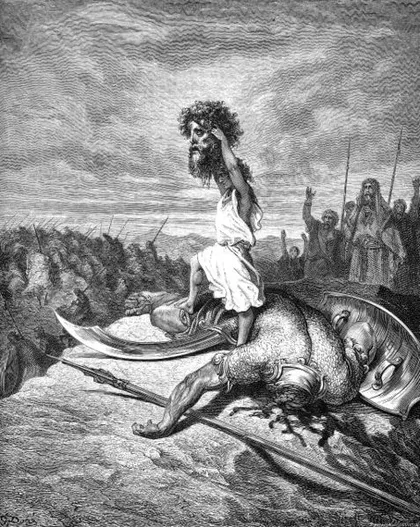
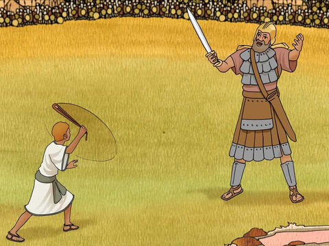
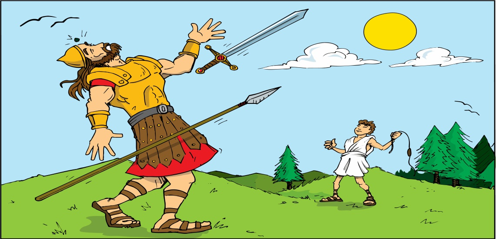
הקרב בין דוד לגוליית היה אחד הרגעים המכוננים בהיסטוריה של ישראל, וסמל לניצחון האמונה והאומץ מול כוח פיזי מאיים. האירוע התרחש בעמק האלה, בו ניצבו צבא ישראל מול הפלשתים, כשגוליית יצא יום אחר יום והתגרה בלוחמי ישראל, אך איש לא העז להילחם בו
ניצחון ישראל ובריחת הפלשתים - לאחר שדוד ניצח והרג את גוליית, כולל עריפת ראשו והצגתו בפני כולם. הפלשתים, שרואים את מות גיבורם, נמלטים בפחד: "וַיִּרְאוּ הַפְּלִשְׁתִּים כִּי-מֵת גִּבּוֹרָם וַיָּנֻסוּ" (שמואל א', י"ז, נ"א). ברגע אחד, יחסי הכוחות השתנו - ישראל, שהיו מיואשים, זכו בניצחון מפתיע
המשמעות ההיסטורית - הקרב בין דוד לגוליית אינו רק עימות פיזי, אלא גם סמל ל
ניצחון האמונה,
האומץ והתושייה מול כוח מאיים. דוד מוכיח כי גודל פיזי אינו המדד האמיתי לניצחון, אלא
הביטחון הפנימי ואמונתו בה'
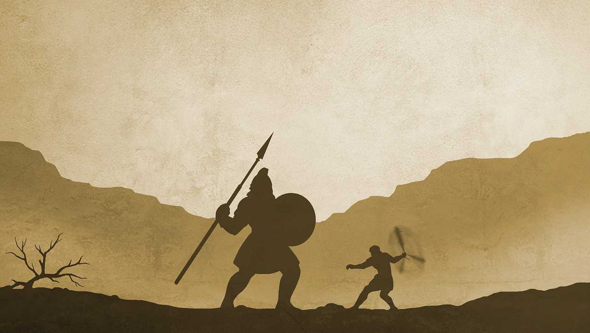
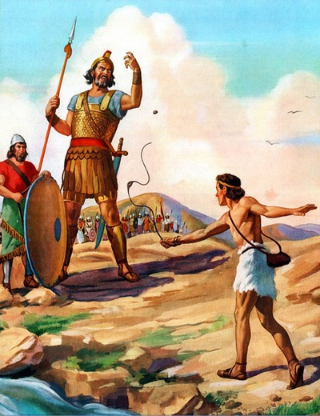
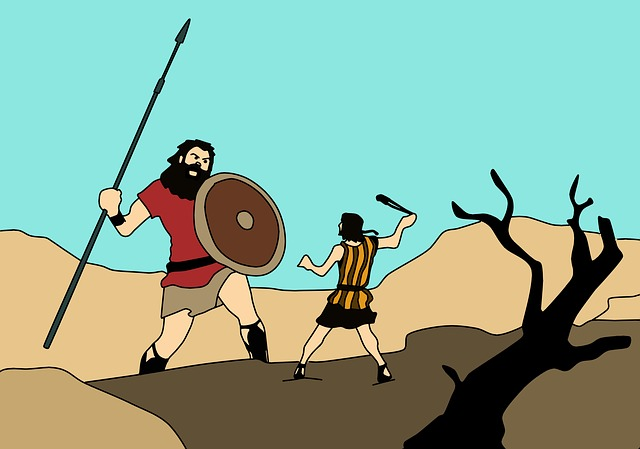